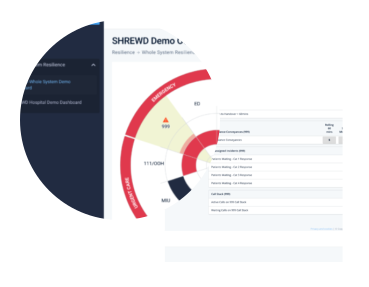
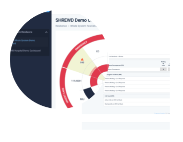

Demand & Capacity Visibility
A live operational management platform that provides instant visibility of whole system data, supporting improved patient flow and safer, more effective care.
Outpatient Flow
A holistic platform for elective services, supporting hospitals to manage entire patient workflows and optimise flow in outpatient care in an efficient manner.

Pre-operative assessment
A digital pre-operative assessment platform for elective surgery which optimises the pathway to theatre and supports a reduction in risk and an increase in theatre utilisation.

Reporting Platform
A specialist solution to collate and review healthcare performance information, supporting health and social care teams to deliver safer patient care.
Patient Tracking Lists
A unique real-time solution to help plan and resource clinical services and meet hourly fluctuations in patient flow, including patient tracking lists to monitorpatient journeys.
Clinical Decision Support
A clinical decision support solution that optimises the delivery of patient-centred medical, surgical, and mental-health care.